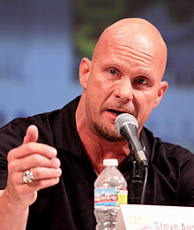

(born August 11, 1953), better known by his ring name Hulk Hogan, is an American semi-retired professional wrestler, actor, television personality, entrepreneur, and musician currently signed with WWE.
Hogan enjoyed mainstream popularity in the 1980s and 90s as the all-American character Hulk Hogan in the World Wrestling Federation (WWF, now WWE), and as "Hollywood" Hulk Hogan, the villainous nWo leader, in World Championship Wrestling (WCW). A regular pay-per-view headliner in both organizations, Hogan closed the respective premier annual events of the WWF and WCW, WrestleMania and Starrcade, on multiple occasions. He was inducted into the WWE Hall of Fame in 2005. He was signed with Total Nonstop Action Wrestling (TNA) from 2009 until 2013, where he was the on-screen General Manager.[6] With a professional career spanning five decades, Hogan is widely considered one of the greatest professional wrestlers of all time.
Steve Austin (born Steven James Williams; December 18, 1964),[1] better known by his ring name "Stone Cold" Steve Austin, is an American actor, producer, and retired professional wrestler who has been hailed as one of the biggest stars in World Wrestling Federation (WWF)/WWE history.[a] Austin also performed for promotions such as World Championship Wrestling (WCW) and Extreme Championship Wrestling (ECW).
He gained significant mainstream popularity in the WWF in the late 1990s as "Stone Cold" Steve Austin, a disrespectful, beer-drinking antihero who routinely defied the establishment and his boss, company chairman Vince McMahon;[7][8] this persona of Austin's has been described as the "poster boy" of the Attitude Era,[9] a boom period in WWF business in the late 1990s and early 2000s. Addressing his box office drawing power, McMahon[2] and former WWE executive Jim Ross[3] have declared Austin to be the most profitable wrestler in the history of the organization. Ross asserted: "Nobody touches Austin... No-one generated more cash in the length of their WWE career."[3] Veteran professional wrestlers and multiple-time WWE Champions Ric Flair,[4] John Cena,[5] and CM Punk[6] have each named Austin as the biggest star in WWE history, and, along with McMahon,[2] have stressed that he surpassed the popularity of Hulk Hogan.

Stone Cold Steve Austin